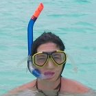
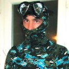
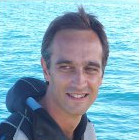
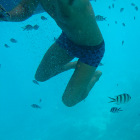
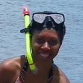
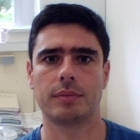

In this project (2011–2015), we studied larval transport and population connectivity of a fish (damselfish, Dascyllus aruanus) and an invertebrate (giant clam, Tridacna maxima) species in the South Lagoon of New Caledonia (SLNC) using three emerging and complementary approaches: (1) parentage analysis via genetic fingerprinting, (2) microchemical analysis of trace elements and artificial markers, and (3) biophysical, metapopulation and genetic models of larval transport and its consequences for population dynamics. While these three fields have independently made many significant advances recently, few, if any, studies have integrated these approaches into a single analysis of marine connectivity patterns. In particular, while understanding connectivity is essential for answering many management and scientific questions, such as achieving effective spatial management of marine resources (e.g., marine protected areas -MPAs-) and understanding the spatial structuring of marine ecosystems, there is a significant gap between our ability to experimentally measure connectivity (e.g., through ecological, genetic and microchemical studies) and our ability to model larval transport (e.g., through biophysical models). To contribute bridging this formidable gap, we brought together a group of young researchers with diverse and complementary skills to attack this problem from a variety of angles. The SLNC provides an ideal model system for studying connectivity on a manageable spatial scale, as well as poses a number of pressing management problems, such as assessing MPA effectiveness and conserving threatened marine species and ecosystems.

Marion Cuif

Pascal Dumas
Cécile Fauvelot
David Kaplan

Christophe Lett (Coordinator)

Tri Nguyen-Huu

Josina Tiavouane

Laurent Vigliola
[6] Cuif M, Kaplan DM, Fauvelot C, Lett C, Vigliola L (2015). Monthly variability of self-recruitment for a coral reef damselfish. Coral Reefs 34(3): 759–770.
[5] Lett C, Nguyen-Huu T, Cuif M, Saenz-Agudelo P, Kaplan DM (2015). Linking local retention, self-recruitment, and persistence in marine metapopulations. Ecology 96(8): 2236–2244.
[4] Grulois D, Tiavouane J, Dumas P, Fauvelot C (2015). Isolation and characterization of fifteen microsatellite loci for the giant clam Tridacna maxima. Conservation Genetics Resources 7(1): 73–75.
[3] Cuif M, Keller F, Chateau O, Kaplan DM, Labonne M, Lett C, Vigliola L (2014). Evaluation of transgenerational isotope labeling of embryonic otoliths in a coral reef damselfish with single and repeated injections of enriched 137Barium. Journal of Experimental Marine Biology and Ecology 459: 151–159.
[2] Cuif M, Kaplan DM, Lefèvre J, Faure VM, Caillaud M, Verley P, Vigliola L, Lett C (2014). Wind-induced variability in larval retention in a coral reef system: a biophysical modelling study in the South-West Lagoon of New Caledonia. Progress in Oceanography 122: 105–115.
[1] Dumas P, Tiavouane J, Senia J, Willam A, Dick L, Fauvelot C (2014). Evidence of early chemotaxis contributing to active habitat selection by the sessile giant clam Tridacna maxima. Journal of Experimental Marine Biology and Ecology 452: 63–69.
In French: Sciences au Sud 2015 Sciences au Sud 2014 Canal IRD 2013 Doctoriales 2013 (Josina) Doctoriales 2012 (Marion) Doctoriales 2012 (Josina)